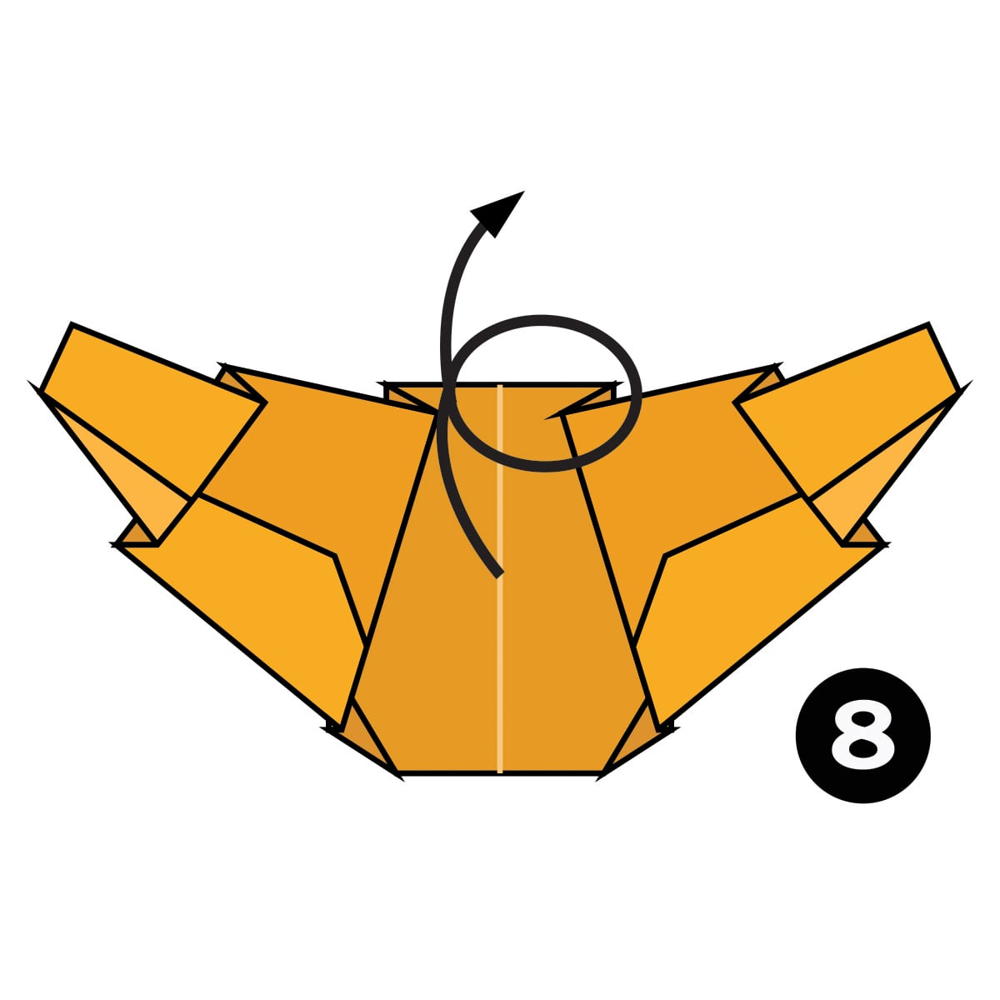

Step 1
Fold and unfold the paper in half both ways.
Step 2
Fold the top and bottom corners to the centre.
Step 3
Fold the left and right edges in along the dotted lines.
Step 4
Make a Mountain Fold and fold the model in half.
Step 5
Fold all the layers of paper up along the dotted lines.
Step 6
Make a Pleat Fold on each side along the dotted lines.
Step 7
Make another Pleat Fold on each side along the dotted lines.

Step 8
Turn the paper over.
Completed
The completed croissant